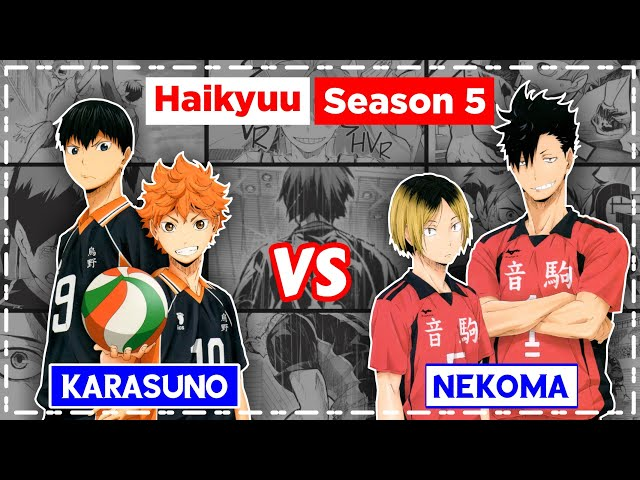
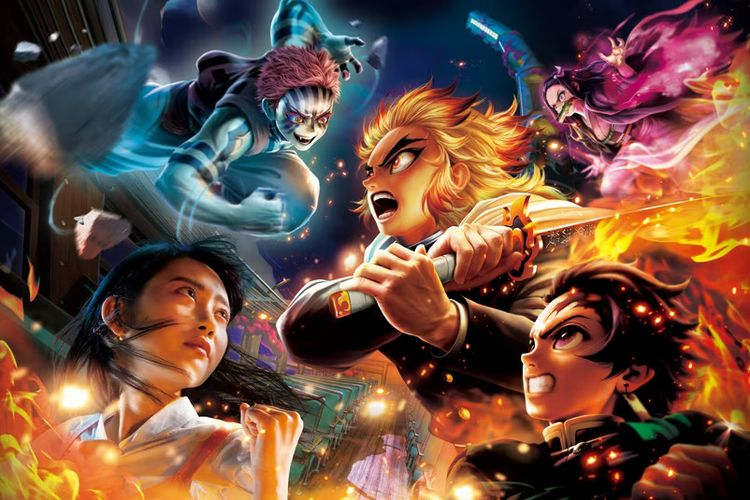
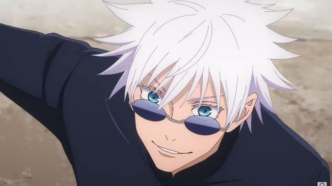
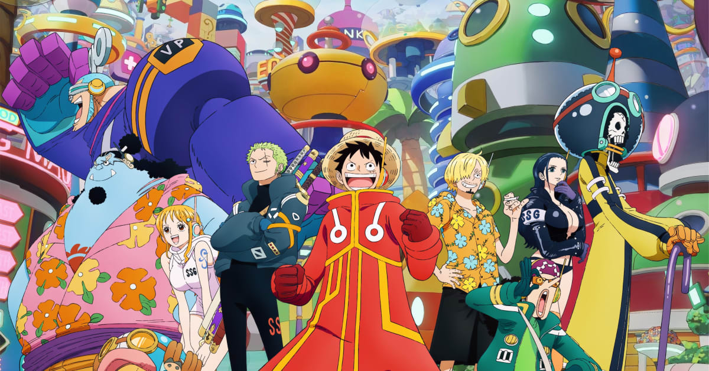

Haikyuu!! Final Movie Akhirnya Rilis Trailer, Siap Tayangkan Pertandingan antara Karasuno dengan Nekoma di Tahun 2024

Selama lebih dari 3 tahun tak dapat kabar, para penggemar manga dan anime Haikyuu!! akhirnya mendapatkan hilal kelanjutan dari perjuangan tim voli SMA Karasuno untuk menjadi juara nasional.
Film yang bertajuk Haikyuu!! The Movie: Decisive Battle at the Garbage Dump ini disutradarai oleh Susumu Mitsunaka, yang juga menggarap anime TV-nya, dengan Mariko Ishikawa sebagai asisten sutradara.
Anime Haikyuu!! Didasarkan pada manga karya Haruichi Furudate yang diserialisasikan dalam Weekly Shonen Jump dari tahun 2012 hingga 2020. Manga nya pun berakhir setelah 405 bab yang dikompilasikan menjadi 45 volume Lihat Selengkapnya
Februari 2024, Wahana Demon Slayer Hadir Lagi di Universal Studios Japan

Wahana bertema anime/manga Demon Slayer: Kimetsu no Yaiba akan kembali hadir di Universal Studios Japan di Osaka, Jepang, mulai Februari 2024. Tepatnya dari Minggu (4/2/2024) hingga Minggu (9/6/2024). Bertajuk Demon Slayer: Kimetsu no Yaiba XR Ride ~Mugen Train Chasing Dreams~, wahana ini dihadirkan lagi berkat tingginya permintaan. Sebelumnya wahana ini pernah diadakan di taman hiburan tersebut pada tahun 2021-2022. Lihat Selengkapnya
Satoru Gojo Bakal 'Bangkit' Lagi?

Kematian Satoru Gojo dalam manga Jujutsu Kaisen menuai pro dan kontra. Akibat Arc Insiden Shibuya, Satoru Gojo terjebak dalam alur alternatif yang dikenal sebagai Alam Penjara.
Sekarang setelah Game Pemusnahan berlaku, para pahlawan berusaha untuk menyatukan dunia mereka dalam menghadapi kemunculan kembali Sukuna. Ada beberapa teori liar yang bertebaran di media sosial.
Dalam manga Jujutsu Kaisen chapter 248, pembaca Gege Akutami sudah mengetahui kalau Satoru Gojo dibantai mati-matian oleh Sukuna hingga tubuhnya terbelah menjadi dua. Dia pun dibiarkan mati begitu saja.Lihat Selengkapnya
Anime One Piece Memasuki Arc Egghead

Memasuki awal 2024, anime One Piece memulai babak terbaru. Setelah menyelesaikan Arc Wano Country yang menjadi terpanjang dan terpenting dalam semesta One Piece, kini Arc Egghead pun dimulai yang resmi tayang sejak 7 Januari 2024 di Jepang di Netflix.Lihat Selengkapnya